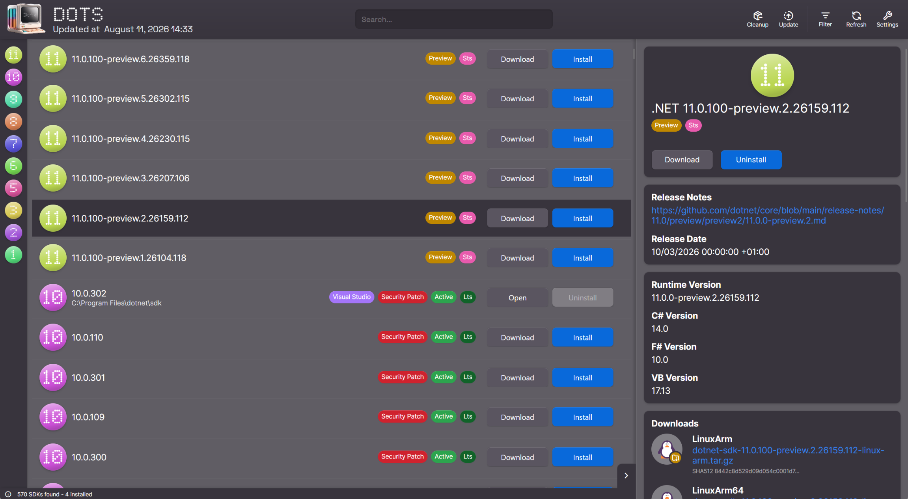

Discover
Browse and install .NET SDKs with ease. No more manual downloads and installations.
free & open‑source · windows · macos · linux
the friendly 🙂 .NET SDK manager
A clean, simple and easy-to-use .NET SDK manager for Windows, macOS and Linux. Always free and open‑source.

what it does
Browse and install .NET SDKs with ease. No more manual downloads and installations.
One-click updates to automatically bump to the latest SDK versions for all channels.
Remove and uninstall old SDKs and their associated files with a single click. Keep your system clean.
Quickly view detailed information about installed SDKs, including version, release date, notes, and more.
get dots
Direct downloads from the latest GitHub release latest
Windows 10 & 11 · installs with auto‑updates
Setup x64macOS 13 or newer · signed & notarized
App Apple siliconAppImage · chmod +x and run
Looking for older versions, checksums or release notes? Browse all releases
built in the open
Dots is developed in the open and is available on GitHub. Contribute to the project, report issues, or request new features. We'd love to hear from you!